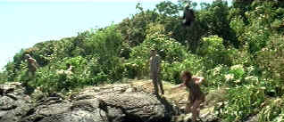

| Planet
of the Apes (SE)/C,A |
| Fox/2001/124/ANA
2.35 |
The original Planet of the Apes was a
favorite of mine. An original script and taut direction brought the
Pierre Boule novel to terrific screen life. Tim Burton was given command
of the most recent flight of the Apes enterprise. Burton brings
his a hip camp sensibility to the material, but it doesn't go far enough
to be funny nor serious enough to even achieve a measure of action comic
success.
 |
| Ape
sets high jump record. ©Fox |
This new
planet is more related to the later Ape sequels. Costume design is
brilliant, but I think Burton’s choice of mostly dark settings
didn’t do anything to make his comic book friendlier. Characters are
given inconsistent physical abilities, a rather annoying sloppiness. The
relationship of the native humans and the space refugee is a
missile off target.
Mark
Wahlberg did nothing to enhance his movie star credentials in Planet
of the Apes. Wahlberg manages to
make astronaut Leo Davidson blander than
the apes, with even less character definition than the miserably made-up chimps.
The biggest problem with Burton’s Planet is that there seems to be no
concern for character development and the action is often silly. Events just happen, quickly. Wahlberg
is out of the cage almost before the first night falls. Why doesn’t
Wahlberg speak to the fellow prisoners? It was so much better in the
original that the humans did not speak and speech was what separated
Heston from the other humans. This time Wahlberg is distinguished from
the other humans by a better haircut and his invaluable experience in
Calvin Klein commercials.
Planet of the Apes is a great DVD
production. Maximum detail is resolved realizing many three-dimensional
scenes. There are a preponderance of dark scenes, a la director Burton's
wont, but outstanding black level and shadow detail pump them to life.
Resolution is even sharp enough to reveal what I would consider some
make-up shortcomings, like the mask-like chimpanzee countenances. Color
is right on target. Comparing the DTS and Dolby Digital soundtracks led me to watch DTS.
The DTS was more focused and aggressive.
The special edition gets the plush 2 disc DVD
treatment. An enhanced viewing mode allows you to watch the film with
periodic PIP windows providing either talking head commentaries form
film principals or visual segments on the aspects of production, like
building the forest set. Audio commentaries by Tim Burton and composer
Danny Elfman anchor the extras. There are numerous small featurette
covering different aspects of production. There are five extended
scenes, an HBO special, a music video, multi-angle scene studies and
more.
|
|
|
|

Selections from the Feature Archive include articles on
Akira Kurosawa, Frank
Darabont, Blonde Bimbos, Hollywood Street Gangs, or Vietnam: The
Hollywood Pariah, and many more....

Click on the image above for as original view of Akira Kurosawa's work
 
ISF Monitor Calibrations in the
Tristate New York area. Lots of hardware info and frequent hardware peaks from video expert Kevin
Miller. They may be judgmental, but that's the point, isn't it. Lots of DVD reviews plus news and
more.

The Cinema Laser
A home grown magazine for laserphiles that has been publishing for a number of years and has
embraced DVD in a big way. Lots of helpful information.
 Have you visited Home Theater
Talk lately? One of the friendliest places on the Net for Home Theater and DVD discussion, you
can get help for installation problems or simply share your opinions with other
Vidiots. Have you visited Home Theater
Talk lately? One of the friendliest places on the Net for Home Theater and DVD discussion, you
can get help for installation problems or simply share your opinions with other
Vidiots.

Click on the DVD MIA symbol for
profiles of DVDs missing in action.
Add films to the DVD MIA Master List by filling out
a simple form. Click Here
Spartacus
(SE) /A, B+

This is one of the great epic films with an animally electric performance
from Kirk Douglas. Great special edition. |